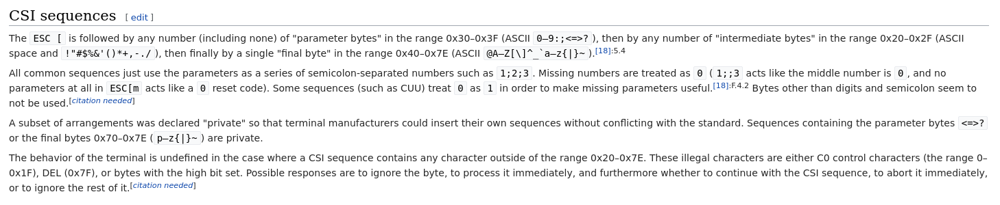
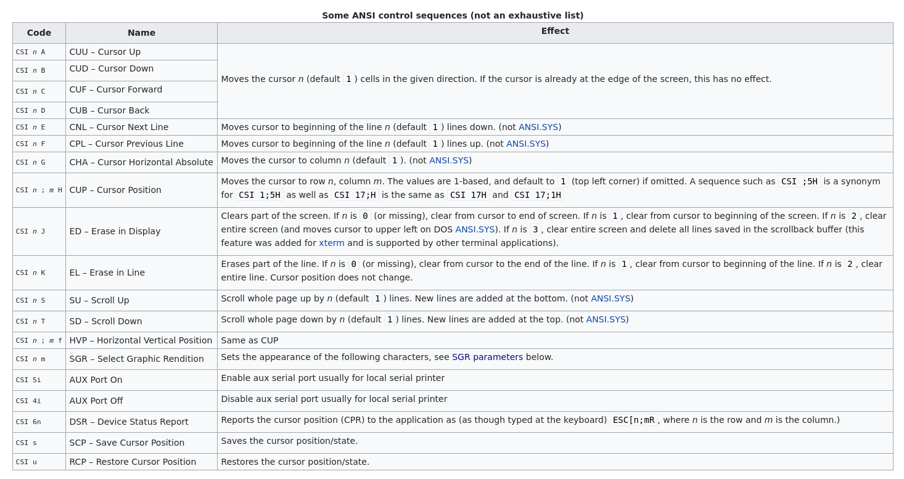
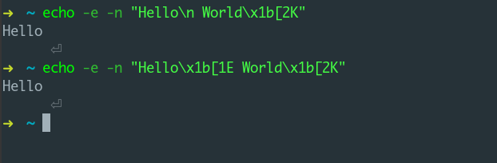
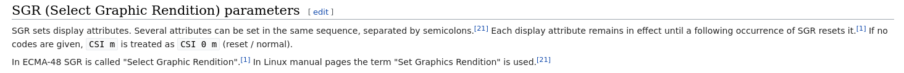
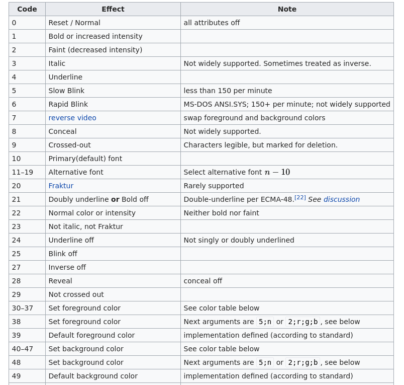
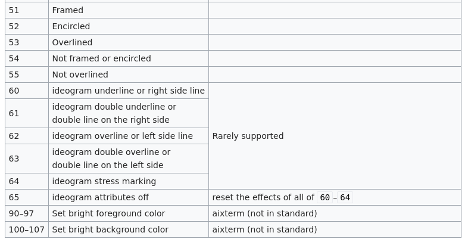

特殊 shell 转义字符
我不知道是不是这里的过程就是这样, 还是我自己的情况. 在一些情况下, 我总是会钻进某个”知识的荒原”里去.
无论我现在获得信息的能力水平如何, 这种情况总是会发生. 然后随着一夜一夜的亢奋, 也总算是能够触碰到我想要的那个 (唯一感到幸运的地方).
或许是该考虑一下信息的获取渠道了…
emmm, 说了一堆废话, 稍稍感慨了一下(主要是又钻进去了…), 还没讲主题.
主题就是题目, linux shell 里用于操作字符显示, 操作光标位置的特殊字符序列.
这篇依然是笔记里的内容, 只是记录了最粗浅的用法. 不是用法粗浅, 而是怎么用只是对此认知的最最底层, 所以粗浅.
另外, 这篇并不会完善所谓的基础知识, 只是用作对这个特殊转义字符的简要介绍. 里面会引用别人博客的内容(链接).
持续更新!
话不多说, 直接上.
准备
继续之前, 确保先读完这篇post Build your own Command Line with ANSI escape codes. 不理解也没关系, 大致有个概念就行.
然后打开这个wiki网页随时查询.
基本结构
看完上面的文章, 人家演示了具体的用法和具体在python中的做法. 如果你只是想在python中使用的话, 那么那里面的内容和wiki就足够了. 如果看了之后还想继续在shell中使用或者在其它语言中使用, 但是没有从那篇文章中得到启发, 仍然一头雾水, 那么继续阅读吧. (其实关于如何使用上面两个资料完全够了…)
ANSI转义字符, 说白了就和c里面的转义字符一样. 只不过c里面的转义字符是由printf负责解释, 而这个ANSI转义字符是由字符终端或者终端模拟器(terminal emulator)负责解释的.
所有包含这些特殊字符的字符序列都会被当成命令由terminal解释, 不会输出显示出来. 所以不用担心输出里面会包含什么奇怪的东西.
先上个bash的例子:1
2
3
4
5
6
7
8
9
10
11
12
13
(( number=0 ))
arg=$1
while [ $number != $(( arg ? arg : 100)) ]
do
(( number = number + 1 ))
echo -e -n "\x1b[0K\x1b[100D\x1b[38;5;106m$number\x1b[0m%" && sleep 0.1s
done
echo -e -n "\x1b[2K"
echo -e -n "\x1b[100D"
可以将其复制运行看看. 它接受一个数字参数, 试试传入10和50看看效果. 我想这个应该能勾起学习兴趣了…
这个脚本最复杂的地方就是这几个echo命令的参数了. 是的, 那些就是所谓的转义序列.
就像c里换行符用\转义一样, ANSI转义序列也有这个要求. 这个一般是ESC[. 然后组成上就再加上以;分隔的参数. ESC代表了键盘左上角ESC键的特殊不可见字符. 这个ESC字符是关键. 如果程序原样打印出了这些字符序列, 那么要么程序有某些设定限制( 如不加-e参数的echo), 要么就是ESC没被识别出来. 其实总结就是ESC没识别出来.
划个重点:
基本结构是
ESC[arg1;arg2;..., 一般来说是一到三个参数. 此外, 之后使用CSI代替ESC[. 所以直接写成CSI arg1;arg2;这个只是我作说明使用, 实际使用还是要完整的输入ESC[的. 具体的可以阅读下wiki开头这一部分, 没看明白也没关系, 继续阅读就行.
就是这个:

命令? 动作? CSI? 参数?
继续上面的例子.
echo的-e选项是Enable interpretation of backslash escapes, 即允许echo对转义字符进行处理. 而-n选项是Do not output a newline, 不输出换行符, 让我们完全接管控制. 剩下的就是\x1b这个东西, 不用想也知道这是个转义字符, 但是这个转成了什么呢? 是ESC字符. 它是不可见ESC字符的十六进制表示, 同样的八进制表示是\033. 也就是说这两个你可以任意选用. 只要能将ESC表示出来就行. 要保证程序最终输出的是一个ESC字符而不是\x1b这个4个字符. 所以我们的CSI表示出来就是\x1b[. 那么我们开始解释上面那个例子了. 坐稳了.
第一行是一个shebang符号, 不多说. 第3,4行初始化变量, 将number赋值0,将第一个参数赋值给arg. 然后6到10行是一个while循环, 持续的打印出number%, 并且对输出进行控制. number周围就是一些ANSI转义序列了. 最后两行重置命令行, 执行完命令后好像什么都没发生一样, 装作没事人.
接下来解释转义序列了.
以防万一你们不想去翻wiki, 上个图.

列表的第一列就是转义序列, 除了CSI要换成\x1b[外, 其它原样输入. 其中n和m里面都有解释, 是一个整数数字, 具体含义参看解释. 而未解释的都是要原样输入的, 是序列的一部分.
那么这里就可以解释最后两行了.1
2
3
4# 擦除整行的内容
echo -e -n "\x1b[2K"
# 左移光标100个单位, 这里依据上下文可理解为将光标移动到最左边, 这也是我的目的
echo -e -n "\x1b[100D"
如何实验呢, 可以命令行输入echo -e -n "Hello World\x1b[2K"看看什么反应. 是不是输出了个空行? 根据shell的不同, 新起的prompt可能会在同一行(默认期望行为)也可能另起了一行而且在后头可能有什么符号表示”你这没有换行符, 为了美观我先给你换了”这样. 同样的, 序列CSI n D会将光标左移100个单位.
多个ANSI转义序列可以同时存在, 并且同时生效. 如果两个有冲突, 那么遵循从左到右的顺序, 依次生效. 同时, 转义序列是按行生效的, 在哪一行就以哪一行为基准进行行动. (其实是和光标位置有关啦) 试试加上个\n会有什么效果echo -e -n "Hello World\n\x1b[2K".
1 | echo -e -n "Hello World\n\x1b[2K" |
好像什么效果都没有. 这是因为\n的缘故, 使得在输出Hell World后另起了一行, 然后擦除行的效果作用在一个什么都没有的行上面. 随后, 程序结束, shell打印提示符. 这里注意这两个序列命令不是维持一个状态, 而是执行一个动作, 所以动作执行后发生什么就和它无关了. 新出来的shell提示符prompt看样子是出现在了擦除行作用的行上, 但是因为那个动作已经先执行了, 我一个后出来的提示符和它没啥关系, 所以自然什么事都没有. 想要验证的话可以这样试试. 把\n放到Hello World的中间去怎么样.

我用的是fish, 效果如上. 基本可以验证我的想法了. 注意到我用了另外一个序列, 起到了同样的效果, 可以自行在上边的表里查找, 当作一个小的练习.
作用在行? 不, 是光标!
其实我提到过这个啦, 小括号里面. 我说过了, 转义序列是按行生效的, 这个从我们之前的测试结果来看似乎是对的, 但是其实不是. 如果你做了上面的小练习, 那么你应该对此有所察觉了.
“这个序列我看了, 可它不是换行啊! 为啥它的效果和换行一样啊! 这啥玩意儿啊!”
哈哈, 别急. 虽然只是我的猜测, 但是你有没有想过, 这些换行符是怎么运作的呢? 为什么这个换行符就能起到换行的作用呢? 而且我们也知道, 换行符在linux和windows上还是不一样的, 为什么会有这种差别呢?
“可这和我今天学ANSI转义序列有什么关系呢?”
额, 确实, 继续在这方面深入的话就有点偏题了, 但是这里也包含了一点点的关系, 涉及到字符解释与表示的问题.
前面提到过, ANSI转义字符是由terminal解释的, 就像\n可以由printf进行解释一样. 那么有没有可能\n的作用不是换行, 而是
- 将光标下移
- 然后将光标左移至顶
这样呢. 它实际操纵的是光标而给我们一种换了行的表面现象呢? 是不是? 这么想一下是不是开始有点意思了. 当然, 具体的我现在还没深入了解, 也只是一个猜测. 我也提到过, 这些转义都会由一个东西进行解释与执行, 就像我们的代码一样. 所以我认为这个猜测很有可能是真的. 不过, 口说无凭, 我后续也会继续求证. 所以, 目前, 我们暂时将其当作一个假设事实. 我们得到了
ANSI转义字符操作的是光标
这么一个重要的假设. 不管是不是真的, 先看看它是不是按照我们的预期行动就行了.
颜色控制 – 给我来个RGB, 带闪光的那种!
我们稍稍探讨了ANSI序列真正操纵的东西是什么, 有点跑远了. 现在我们继续来看看上面的代码.
不过好像有点远了, 没事, 我把它拿下来了. 还对它做了点改变, 方便探讨.
1 | (( number=0 )) |
这个循环将会执行100次, 并且输出1%到100%. 有了上面的经验, 我们再看这个echo行是不是好多了. 来, 我们依次解释
\x1b[0K查询上边的表, 得到是擦除从光标到行尾内容的效果
看来猜测确实是对的, wiki都这么说了是不. 不过好像还是会依赖行. 嗯? 什么, 你不信wiki, 那你就任重道远了, 继续深入吧探索吧, 求证之后也一定要让我知道.
那么, 再次看看那个表, 上面的东西都已经开放了. 在得知其作用于光标这个结论后.
表里面提到什么滚动, 上移下移. 这些都可以探索了.
\x1b[100D左移光标100个单位
然后碰到了一个\x1b[37m 这个东西还有\x1b[0m.
查询表得到几个相似的东西. 就是CSI n m这个. wiki让我们去找SGR parameters. 为了方便, 我也将它准备好了.
我们得到这个表述:

从中, 知道了这个序列码会一直生效, 可以接受多个参数, 以;分离. 而且关键的一点是除非有另外的代码生效, 否则前一个的效果会一直持续下去.
然后就是一个列表, 为了方便, 我把它分成了两个.


继续在表里查找CSI 37 m这个序列, 然而并没有得到直接的说明, 它让我们继续向下找color table.
不过这里我就不继续贴图了, 有了上面的经验, 要看懂应该也不是难事了. 直接解释.
CSI 0 m或者CSI m会重置所有的设置和状态. 这个在你实验的时候非常重要. 然后其它的可以参考上面的引用博客. 那里面说的非常详细了, 阅读完应该就有了大致了解, 其它的继续参照wiki吧.
这里有个总结:
CSI 30m到CSI 37m是八个字体颜色, 也是8bit字符表示的颜色.CSI 30;1m到CSI 37;1m又是八个, 不过带了粗体.CSI 38;5;nm有点厉害了, 提供256个颜色, 其中的n是1-256的范围.
同时, 除了设置字体颜色, 还支持设置背景颜色. 还有额外的字体装饰等等功能. 这些就让你去自行探索吧. wiki上可以参考, 那个post也值的一读.
将它应用到其它程序语言中去
以上都是使用echo, 也就是所谓的shell脚本来说明的. 那么如何在其它语言中使用呢? 答案就是该怎么用就怎么用. 只要terminal支持, 这些字符序列就都会起作用, 这些字符不是由shell解释的, 而是由terminal解释的, 所以terminal对它有最终解释权.
“恩, 说的不错, 但要怎么呢?”
我觉得我说的挺明白了… 好吧, 再拿shell举例, echo "\x1b[37mHello World\x1b[m"这里面发生了什么呢.
先是echo解释转义字符\, 于是得到ESC[37mHello WorldESC[m, 这里的ESC代表不可见字符ESC, 是计算机内存中的表示. 然后echo再将其输出到标准输出端口, terminal接收到了这个字串, 遇见ESC[37m将其视为命令执行, 然后输出白色的Hello World, 再次遇到命令, 重置. 输出结束.
就像我开头强调的那样, 重要的是不可见字符ESC字符的识别. 如果使用c的话, 那就是printf("\x1b[37mHello World\n\x1b[m");, 最最重要的依然是ESC的输出和对它的识别. 得要让terminal识别出命令. 这样就行了.
看完引用post后你应该直到了如何使用python来操作了, 这里你又会了shell和c的表示. 那么, 将这些经验带到其它的语言中去吧.
比如我在scheme中就是1
2
3
4(display (string-append (string #\033)
"[37mHello World\n"
(string #\033)
"[m"))
好了, 以上就是基本的介绍了. 这里面也还有东西, 比如terminal和我们运行的程序的关系这类以及terminal如何处理字符的打印这些问题. 留待后续探讨吧.